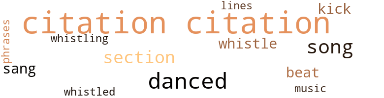
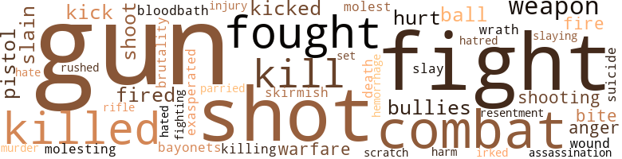
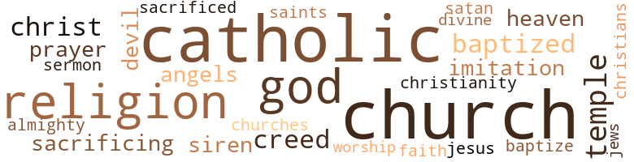

Cop (The): A Novel, by Morris, Earl J. (1951)
37 music-related terms matched in this text.
Most frequent terms in this topic: citation (11); danced (5); song (4); section (3); sang (2)
dance.v.03
Definition: skip, leap, or move up and down or sideways
| word | sentence |
|---|---|
| danced | He danced into the kitchen with a song on his lips . |
| danced | People sang , shouted , and danced in the streets . |
| danced | Hawkins eagerly opened it and read : WILL CELEBRATE BIRTHDAY OF CHARLES III IN LOS ANGELES STOP LOOK FOR US FRIDAY WE HAVE TWO MONTHS VACATION STOP TELL MAX AND THE GANG WE WILL SEE THEM SOON STOP JOYCE SENDS LOVE DITTO LITTLE CHARLES CHARLES II Charles and Sarah Hawkins danced with joy . |
| danced | They clasped their hands together and danced round and round . |
| danced | This fifty-six - year-old man and his fifty-three-year-old wife danced as they must have when they were children . |
kick.v.04
Definition: kick a leg up
| word | sentence |
|---|---|
| kick | No , sir , it ai n't right to kick us in the face , " the elder Hawkins said hotly . |
| kick | I know that with separate beds I do n't kick you out , " Sarah said , changing the subject . |
music.n.01
Definition: an artistic form of auditory communication incorporating instrumental or vocal tones in a structured and continuous manner
| word | sentence |
|---|---|
| music | Suddenly the music stopped playing on the radio . |
phrase.n.02
Definition: a short musical passage
| word | sentence |
|---|---|
| phrases | We hear such phrases as , Will they raise taxes this year ? ' |
quotation.n.02
Definition: a passage or expression that is quoted or cited
| word | sentence |
|---|---|
| citation | I think that you will receive a citation from the Chief for this . " |
| citation | Hawkins blushed ; then the thought of receiving a citation sent him into the clouds . |
| citation | Charles Hawkins received a citation for the arrest just as Captain Thomas Harrigan had predicted . |
| citation | " He is more proud of that citation , than some lawyers are when they pass the bar examination , " Coleman commented when Hawkins had joined them one evening . |
| citation | It is a high honor to receive a citation . |
| citation | " He is simply telling me that this citation should not make me become too ambitious . |
| citation | You are right to be proud of your citation . |
| citation | " Charlie , my son , look what your daddy received from the Police Department - a nice piece of paper to hang on the wall , " Hawkins said as he placed his son in his crib and held up his citation toward the child . |
| citation | " Oh , they gave you a citation for catching that bandit . |
| citation | It is a citation your daddy got for arresting a bad man , " Hawkins said as he waved the precious piece of paper in front of his son . |
| citation | The Solomons were very happy to see the citation . |
| citations | You have earned fifteen citations . |
rhythm.n.01
Definition: the basic rhythmic unit in a piece of music
| word | sentence |
|---|---|
| beat | " I bet Hawkins feels the same way when he walks down Fifth Street from Central over to San Pedro , which covers part of his old beat , " Hickman said . |
| beat | My beat will be kept clean . " |
section.n.01
Definition: a self-contained part of a larger composition (written or musical)
| word | sentence |
|---|---|
| section | You have read the newspapers and you know what happened in that section , and your guess is as good as hers . |
| section | All of us old timers are now in the cheering section . |
| section | We are rooting for the youngsters on the force , and we know that ere long their time will come to take our places in the cheering section . " |
sing.v.02
Definition: produce tones with the voice
| word | sentence |
|---|---|
| sang | People sang , shouted , and danced in the streets . |
| sang | People laughed , sang , and played . |
song.n.01
Definition: a short musical composition with words
| word | sentence |
|---|---|
| song | That morning in March , he had arisen whistling a song . |
| song | He danced into the kitchen with a song on his lips . |
| song | Hawkins arose every morning with a song on his lips . |
| song | But the song would turn sour after the postman had passed and left no letter from Charles or Joyce . |
tune.n.01
Definition: a succession of notes forming a distinctive sequence
| word | sentence |
|---|---|
| lines | He knew that Max Solomon and a group of his friends had already done much good work along these lines . |
whistle.n.01
Definition: the sound made by something moving rapidly or by steam coming out of a small aperture
| word | sentence |
|---|---|
| Whistles | Whistles blew , sirens wailed , and the bells rang . |
whistle.v.01
Definition: make whistling sounds
| word | sentence |
|---|---|
| whistling | That morning in March , he had arisen whistling a song . |
| whistled | Major Joseph D. Bradley ! " whistled Hawkins . |
| whistle | He had blown the whistle and tossed up the ball to start the match . |
138 violence-related terms matched in this text.
Most frequent terms in this topic: gun (19); fight (9); shot (9); combat (6); fought (6)
abrasion.n.01
Definition: an abraded area where the skin is torn or worn off
| word | sentence |
|---|---|
| scratch | I did n't get a scratch . |
anger.n.01
Definition: a strong emotion; a feeling that is oriented toward some real or supposed grievance
| word | sentence |
|---|---|
| anger | I am a reserve officer and I am ready to defend this coun - try at any time , in any place , " young Hawkins said with anger mounting in him . |
| anger | He smiled at the mounting anger of his friend . |
battle.v.01
Definition: battle or contend against in or as if in a battle
| word | sentence |
|---|---|
| combat | Hawkins turned the card over in his hand and read : PREAMBLE TO THE CONSTITUTION For God and country , we associate ourselves together for the following purposes : To uphold and defend the Constitution of the United States of America : To maintain law and order ; To foster and perpetuate a one hundred percent Americanism ; To preserve the memories and incidents of our associations in the Great War ; To inculate a sense of individual obligation to the community , state , and nation ; To combat the autocracy of both the classes and the masses ; To make right the master of might ; To promote peace and goodwill on earth ; To safeguard and transmit to posterity the principles of justice , freedom and democ - racy ; To consecrate and sanctify our comradeship by our devotion to mutual helpfulness . |
bayonet.n.01
Definition: a knife that can be fixed to the end of a rifle and used as a weapon
| word | sentence |
|---|---|
| bayonets | It was close combat , with bayonets brought into play . |
bleeding.n.01
Definition: the flow of blood from a ruptured blood vessel
| word | sentence |
|---|---|
| hemorrhage | The great man died of a cerebral hemorrhage at Warm Springs , Georgia . |
bloodbath.n.01
Definition: indiscriminate slaughter
| word | sentence |
|---|---|
| bloodbath | The world was plunged in a terrific bloodbath . |
brush.n.06
Definition: a minor short-term fight
| word | sentence |
|---|---|
| skirmish | " Yes , skirmish order . |
character_assassination.n.01
Definition: an attack intended to ruin someone's reputation
| word | sentence |
|---|---|
| assassination | Benjamin J. Bowie , Charles Hawkins , and Joe Bradley had not attached too much significance to the assassination of Archduke Ferdinand in the Balkan town of Sarajevo in 1914 . |
death.n.08
Definition: the act of killing
| word | sentence |
|---|---|
| death | If a fellow has not committed a crime which calls for the death penalty , why should you kill him ? |
ferociousness.n.01
Definition: the trait of extreme cruelty
| word | sentence |
|---|---|
| brutality | " If the fellow gives you some lip and you arrest him , he can shout to a judge about police brutality . |
fight.n.02
Definition: the act of fighting; any contest or struggle
| word | sentence |
|---|---|
| combat | It was close combat , with bayonets brought into play . |
| combat | " Hawkins , in the army you never bunched up in combat . |
| combat | There was no crowd around them , indicative of the fact that others knew that this would be a mortal combat and did n't wish to get into the line of fire , " Cobb revealed . |
| combat | It is similar to a medal issued for combat service in the army . |
| fighting | All the fighting is not done on a battlefield . |
| combat | I have been in combat . " |
fight.n.05
Definition: a boxing or wrestling match
| word | sentence |
|---|---|
| fight | Let 's cross over and stop that fight before it gets started , " Cobb said suddenly , leading the way across Central . |
| fight | " Well , we had a fight . |
| fights | The more serious type of fights are very quiet . |
| fight | " The good little boys sometimes have to protect themselves from the bad little boys who start the fight . " |
| fight | Her mother is French and her father is a veteran of the last big fight . |
| fight | It was two years before we got into the fight , " Hawkins said , recalling the date . |
fight.v.02
Definition: fight against or resist strongly
| word | sentence |
|---|---|
| fight | Do n't fight unless you have to . |
| fought | All information had been handed to him , and he fought his way back to the American lines . |
| fight | They fight each other . " |
| fight | " Daddy , I thought it was only bad little boys who fight . " |
| fought | Mothers , wives , and sisters were treat - ing their soldiers as if they were tiny babies , instead of strapping men who had fought and won a bitter , savage war . |
| fight | Leroy getting them started on a subject , and then hopping out and letting Hickman and Hawkins fight it out . |
| fought | " The Catholics have always fought against racial intolerance . |
| fought | The Catholics were among those who fought for the abolition of slavery . |
| fought | The Catholics have fought for you as a Negro on many scores . |
| fought | Then there are the Quakers who have fought for you . |
gall.v.02
Definition: irritate or vex
| word | sentence |
|---|---|
| irked | Write him and ask about the girl , " he said , irked at her questions . |
gun.n.01
Definition: a weapon that discharges a missile at high velocity (especially from a metal tube or barrel)
| word | sentence |
|---|---|
| gun | " Now son , be careful how you use your gun . |
| gun | In those split seconds that it takes to draw and fire your gun , you have judged the man guilty of a capital offense and you are also the executioner . |
| gun | He went home to get a gun . |
| gun | I had a gun . |
| guns | " How did you know that these men had guns ? " |
| guns | " I did n't know they had guns . |
| guns | On that day , November 11 , 1918 , the guns were silenced . |
| gun | He had caught the other fellow cheating , and then he let him go for a gun . |
| gun | The gun fell to the pavement , struck its hammer , and fired . |
| gun | The report of the gun 's discharge frightened the youth . |
| gun | He thought that the officer , seeing him with a gun in his hand , had fired , not noticing he had dropped his own weapon . |
| gun | Officer Hawkins had never pulled his gun from its holster . |
| gun | He saw the young man drop the gun . |
| gun | " I dropped my gun and surrendered . |
| gun | Hawkins had picked up the gun from the pavement , and the three of them walked back to the store . |
| gun | His gun went off when he dropped it to surrender , " Hawkins answered . |
| Guns | Guns accidentally discharged can kill innocent people . |
| gun | The young bandit , suddenly face to face with a police officer , knew that the gun in his hand was a death warrant to him . |
| gun | He carries a gun , but he really does n't need one . |
| gun | Hawkins had seen that look in her eyes every day for the past twenty years - every time he had buckled on his gun . |
| guns | The guns were silenced . |
| gun | " Why , you old son of a gun ! " was all that the surprised Hawk could say . |
| gun | Then they carry a club and a gun and go around beating people up , " Coleman said . |
| gun | An occasional burst of mortar shell that struck nearby , throwing shrapnel about , or a sudden blast of machine gun fire , were vivid reminders that they were not back in Los Angeles . |
hate.n.01
Definition: the emotion of intense dislike; a feeling of dislike so strong that it demands action
| word | sentence |
|---|---|
| hatred | This guy has race hatred bad , " Charles J. Hawkins , Jr. , said as he angrily threw down the newspaper and rose to his height of six feet two inches . |
hate.v.01
Definition: dislike intensely; feel antipathy or aversion towards
| word | sentence |
|---|---|
| hate | People will hate you just because you are an officer . " |
| hated | My wife hated the job and she nagged and nagged me until I resigned . " |
infuriate.v.01
Definition: make furious
| word | sentence |
|---|---|
| exasperated | He was exasperated . |
injury.n.01
Definition: any physical damage to the body caused by violence or accident or fracture etc.
| word | sentence |
|---|---|
| injury | His injury was not bad at all . |
| harm | He suspects every country of doing harm to his beloved America . |
kick.v.04
Definition: kick a leg up
| word | sentence |
|---|---|
| kick | No , sir , it ai n't right to kick us in the face , " the elder Hawkins said hotly . |
| kick | I know that with separate beds I do n't kick you out , " Sarah said , changing the subject . |
kick_back.v.02
Definition: spring back, as from a forceful thrust
| word | sentence |
|---|---|
| kicked | The little fat cherub kicked both legs and waved his arms and then looked up at his daddy , and said , " Goo ! " |
| kick | Some feel that they must kick others around . |
| kicked | " So they kicked you old fossils out of the army ? |
| kicked | But we will positively not stand to be kicked in the face . |
kill.v.10
Definition: cause the death of, without intention
| word | sentence |
|---|---|
| kill | If a fellow has not committed a crime which calls for the death penalty , why should you kill him ? |
| kill | I hope that I never have to kill anyone . |
| Killing | Killing in a war is different from this . |
| killed | A great many of those who are maladjusted socially are confined , some are executed by the state , and others are either killed by officers or their own kind . |
| kill | He had cheated me at dice and then wanted to kill me . |
| killed | Had one oF the men fired a direct hit , it would have been possible for both of us to be killed . |
| killed | Benjamin J. Bowie had been one of that vast number , 126,000 , who had been killed in what was to become known as World War I. Charles Hawkins , like thousands and thousands of others , was mustered out of service . |
| kill | They will not be so anxious to kill each other , " Cobb said as they turned off Central into Newton Street . |
| kill | Guns accidentally discharged can kill innocent people . |
| killed | The dope-addict robbed , stole , and killed to obtain his cocaine , morphine or heroin . |
| killed | I do n't know whether Joe was killed during the last war or not . |
| killed | I know that Benjamin J. Bowie was killed . |
molest.v.01
Definition: harass or assault sexually; make indecent advances to
| word | sentence |
|---|---|
| molesting | " He is molesting the people . |
| molest | Never molest a man , unless you have a reason or you have something on him , " Cobb advised . |
murder.n.01
Definition: unlawful premeditated killing of a human being by a human being
| word | sentence |
|---|---|
| slaying | They often failed to recognize the fact that when a police officer was forced to take a human life , he like any other member of the society which he represented had to appear before an inquisition board to determine the legality of the slaying . |
| murder | Hitler is getting away with murder . |
murder.v.01
Definition: kill intentionally and with premeditation
| word | sentence |
|---|---|
| slay | It seems that a citizen who knew that the men were armed and about to slay each other had put in a call , not knowing that Cobb and Hawkins would be there . |
| slain | Bowie had been slain in battle . |
| slain | They do not know that a Negro was the first American slain in the cause for freedom in this country . |
| slain | Thus , Benjamin J. Bowie , who had been slain on foreign soil in defense of his country , had been honored by his former buddies . |
musket_ball.n.01
Definition: a solid projectile that is shot by a musket
| word | sentence |
|---|---|
| ball | " What he really means is that a man really has to have some - thing on the ball . |
| ball | He had blown the whistle and tossed up the ball to start the match . |
| ball | Coleman gives the ball to Hickman and he dashes towards the goal line , bowling everyone over , " Blaine commented . |
open_fire.v.01
Definition: start firing a weapon
| word | sentence |
|---|---|
| fire | In those split seconds that it takes to draw and fire your gun , you have judged the man guilty of a capital offense and you are also the executioner . |
| fired | Had one oF the men fired a direct hit , it would have been possible for both of us to be killed . |
| fire | You are not exposed to fire from another direction . |
| fired | The gun fell to the pavement , struck its hammer , and fired . |
| fired | He thought that the officer , seeing him with a gun in his hand , had fired , not noticing he had dropped his own weapon . |
pain.v.02
Definition: cause emotional anguish or make miserable
| word | sentence |
|---|---|
| hurt | This little work that I do will not hurt me and besides the baby will not be here until sometime in August . |
| hurt | " Lady , he is not hurt . |
| hurt | You will hurt that child . |
parry.v.01
Definition: impede the movement of (an opponent or a ball)
| word | sentence |
|---|---|
| parried | " I am serious , " Coleman parried . |
pistol.n.01
Definition: a firearm that is held and fired with one hand
| word | sentence |
|---|---|
| pistol | The young officer was surprised when he pulled an ugly-looking black automatic pistol from the pocket of one of the men . |
| pistol | He was more surprised when he found a Spanish-made .38 pistol in the pocket of the other fellow . |
| pistol | I was going to blow him to kingdom come when he pulled his pop pistol out , " the man with the hat said just as a squad of detectives pulled up . |
resentment.n.01
Definition: a feeling of deep and bitter anger and ill-will
| word | sentence |
|---|---|
| resentment | His face clouded with resentment at the interruption of his pleasant thoughts . |
rifle.n.01
Definition: a shoulder firearm with a long barrel and a rifled bore
| word | sentence |
|---|---|
| rifle | He had donned the khaki , shouldered an Enfield rifle , taken his basic training , sailed on a troopship , landed in France , and finally found himself in a trench . |
rush.v.02
Definition: attack suddenly
| word | sentence |
|---|---|
| rushed | When the Puerto Rican branch of the Hawkins family came through the gate , the Los Angeles clan rushed into their arms . |
shoot.v.02
Definition: kill by firing a missile
| word | sentence |
|---|---|
| shot | Bradley had been shot . |
| shot | I could have shot him easily had I wanted to do so . |
| shot | Sweat began streaming down his face ; he knew that he had been shot . |
| shot | " I think you shot me , " the youth accused . |
| shoot | It was not necessary to shoot me . " |
| shoot | " Did you shoot him , Officer ? |
| shoot | " No , I did n't shoot him . |
| shot | He was glad that he had not been shot . |
| shot | And if he had been shot , why should you worry about him ? |
| shot | He would have shot you as easy as he looked at you and your husband , " Hawkins said . |
| shot | If he is an American he will be shot on sight , " Bradley explained to Sarah . |
| shot | But you would have thought I had been shot full of holes to hear the little woman rave . |
shooting.n.02
Definition: killing someone by gunfire
| word | sentence |
|---|---|
| shooting | Little did he dream that a shooting in the faraway Balkans would have anything to do with him . |
| shooting | Her Irish dander got up when I got in a shooting scrape with some thugs . |
sic.v.01
Definition: urge to attack someone
| word | sentence |
|---|---|
| set | I know that you have your heart set upon the job , and if you get it I will be very happy . |
sting.n.03
Definition: a painful wound caused by the thrust of an insect's stinger into skin
| word | sentence |
|---|---|
| bite | " Sarah , Joyce is going to spend two months with us , so will you • stop asking her so many questions and fix us a bite to eat ? |
| bite | " Sit down , my boy , let us rest until after we have had a bite to eat , " Hawkins suggested . |
strong-arm.v.02
Definition: be bossy towards
| word | sentence |
|---|---|
| bullies | I guess the world is filled with bullies , " she said . |
| bullies | " Yeah , I do not like bullies . |
| bullies | I may have to get my old uniform out and let him know that I know how to take care of big bad bullies like him , " Hawkins replied to his son . |
suicide.n.01
Definition: the act of killing yourself
| word | sentence |
|---|---|
| suicide | Others commit suicide . |
war.n.03
Definition: an active struggle between competing entities
| word | sentence |
|---|---|
| warfare | Benjamin J. Bowie , Joe Bradley , and Charles Hawkins were among the 2,000,000 men who had landed in Europe and participated in nineteen months of warfare . |
| warfare | Hawkins was twenty-two when Germany began her unrestricted submarine warfare . |
weapon.n.01
Definition: any instrument or instrumentality used in fighting or hunting
| word | sentence |
|---|---|
| weapons | I knew they had some sort of weapons . |
| weapon | He was too close to the officer to do anything but drop the weapon he carried . |
| weapon | He thought that the officer , seeing him with a gun in his hand , had fired , not noticing he had dropped his own weapon . |
| weapons | He found no coins , nor any other weapons . |
| weapon | There was no defense against this terrible weapon . |
wound.n.01
Definition: an injury to living tissue (especially an injury involving a cut or break in the skin)
| word | sentence |
|---|---|
| wound | Charles Hawkins had received a bullet wound joining the ranks of 234,000 who had been wounded . |
wrath.n.01
Definition: intense anger (usually on an epic scale)
| word | sentence |
|---|---|
| wrath | He felt that this would bring the wrath of Sarah upon him . |
131 religion-related terms matched in this text.
Most frequent terms in this topic: Church (20); Catholics (18); Catholic (12); church (12); God (11)
baptize.v.01
Definition: administer baptism to
| word | sentence |
|---|---|
| baptized | The priest then made the sign of the Cross upon the forehead and breast of the tiny tot to show that the one to be baptized from thence on belongs to Christ . |
| baptize | The priest poured water upon the head of the baby and pro- nounced , " I baptize thee in the name of the Father and the Son and of the Holy Ghost . " |
| baptized | Charles and Sarah Hawkins touched the child to show that they concurred and accepted the spiritual relationship which will henceforth exist between them and the baptized infant . |
| baptized | Charles James Hawkins , Junior , bad been baptized in a beautiful symbolical ceremony . |
catholic.n.01
Definition: a member of a Catholic church
| word | sentence |
|---|---|
| Catholics | " Yes , you see Catholics are very strong in Louisiana . |
| Catholics | So he made a crack about the Catholics to Hickman . |
| Catholics | Coleman 's family are Catholics . |
| Catholic | Charles Hawkins was a Catholic . |
| Catholic | She was a devout Catholic . |
| Catholic | " Still a good Catholic , I see . |
| Catholic | " Yes , I am still a good Catholic . |
| Catholic | " Are you a Catholic ? " inquired Sarah . |
| Catholics | Marie , Joyce , and I , we are all Catholics , " Bradley answered . |
| Catholic | It is too bad that he is a Catholic , " Coleman said . |
| Catholics | Catholics are all right . |
| Catholics | I know many things that the Catholics have done . |
| Catholics | A great many things the Catholics do help us non-Catholics as well as the Catholics . |
| Catholics | A great many things the Catholics do help us non-Catholics as well as the Catholics . |
| Catholics | " The Catholics have always fought against racial intolerance . |
| Catholics | There is no country in the world where the Catholics have anything to say , that you can find racial prejudice . |
| Catholics | The Catholics were among those who fought for the abolition of slavery . |
| Catholics | The Catholics have fought for you as a Negro on many scores . |
| Catholic | You just watch and see - where a Catholic has an opportunity , he will go to bat against racial prejudice . |
| Catholics | The priest over there at St. Patrick 's Church does n't stop at helping the poor Catholics . |
| Catholic | Now if Charles Hawkins is a Catholic , that is fine . |
| Catholics | The Catholics and Jews are attacked by people like you all the time . |
| Catholic | And what is true of the Catholic and the Jewish religions is true of all the religions . |
| Catholic | This would be a pretty bad place if we did n't have the Catholic , Jewish , and Protestant religions . |
| Catholics | I will have a greater respect for the Catholics and all religions since you have told me . |
| Catholics | Say , Charlie , there is something I would like to know about Catholics . |
| Catholic | I try to be a good Catholic . |
| Catholics | Only last night I had an argument with Coleman about the Catholics , " Hickman told him . |
| Catholics | She has always liked the manner in which Catholics conduct themselves . " |
| Catholic | You speak French and Spanish and you are a Catholic , " Coleman said slyly . |
christendom.n.01
Definition: the collective body of Christians throughout the world and history (found predominantly in Europe and the Americas and Australia)
| word | sentence |
|---|---|
| Christianity | Baptism is the sacrament which cleanses from original sin into Christianity the children of God and heirs of Heaven . |
christian.n.01
Definition: a religious person who believes Jesus is the Christ and who is a member of a Christian denomination
| word | sentence |
|---|---|
| Christians | They were good Christians . |
church.n.02
Definition: a place for public (especially Christian) worship
| word | sentence |
|---|---|
| church | " He is responsible for Frank Hick - man 's going to church with us and being on the road to Catholicism . " |
| church | History may never take any cognizance of the child , its parents , or the little church off Central Avenue on Thirty - Fourth Street revered by those in the community . |
| church | One Sunday , when Mass was over , people were coming out of St. Patrick 's and loitering on the steps of the church to greet friends . |
| church | They had spoken to each other many times , hut always in connection with church duties . |
| church | " Miss Jackson , " he called as she stepped out on the grey stone church steps . |
| church | He treated us nice , just as if we were on our way to church , instead of jail . |
| church | He was a great church man . |
| churches | Finally , they began meeting in churches and other large buildings because of their growing numbers . |
| church | " You have your N.A.A.C.P. work , your American Legion work , and you are on several committees at the church . |
church.n.04
Definition: the body of people who attend or belong to a particular local church
| word | sentence |
|---|---|
| Church | Hickman came to the defense of the Church . |
| Church | Members of St. Patrick 's Church had done likewise . |
| Church | The priest looked at the child affectionately and said , " What dost thou ask of the Church of God ? " |
| Church | How is the priest at St. Patrick 's Church ? |
| Church | I got a letter from the Father down at St. Patrick 's Church . |
| church | I told them about our church , its red brick front and grey stone steps . |
| Church | On Sunday , February 16 , 1946 , Charles J. Hawkins , Jr. and Joyce Bradley were joined together in holy matrimony at St. Patrick 's Church . |
| church | The elder Hawkinses repeated their vows as they had on this very same day twenty-five years ago , in the very same church . |
| Church | After the beautiful wedding ceremonies at St. Patrick 's Catholic Church at Thirty-fourth and Wadsworth Streets , the happy brides and bridegrooms , along with their attendants , went to the Beverly Hills residence of Col. and Mrs. Max Solomon . |
| Church | The priest over there at St. Patrick 's Church does n't stop at helping the poor Catholics . |
| Church | The Church helps everyone . " |
| Church | I never play when it comes to the Church . " |
| Church | " Frank Hickman , for your information , the Catholic Church has an Eastern and Western jurisdiction . |
| Church | In our Western Church , the clergy from the rank of subdeacon upward are prohibited by Church law from marrying . |
| Church | In our Western Church , the clergy from the rank of subdeacon upward are prohibited by Church law from marrying . |
| Church | This is purely a matter of Church discipline ; the Church is not bound to impose celibacy on all her clergy . |
| Church | This is purely a matter of Church discipline ; the Church is not bound to impose celibacy on all her clergy . |
| Church | Even today , in the Eastern Church , married men are allowed to be ordained and to have a family . |
| Church | The celibacy of the clergy is not a matter of Divine command , hence the Church can permit a variance in its disciplinary laws . |
| church | Thus , we find even in the United States , certain parishes of the Eastern rites in charge of married priests , who are Catholic as we are Catholic but come under the church 's discipline for the Eastern rites . |
| Church | The belief is that a man who is sworn to the Church will devote all his time to the Church . |
| Church | The belief is that a man who is sworn to the Church will devote all his time to the Church . |
| Church | It is not divided between the Church and his wife . |
| church | I think the services rendered by the Catholic church are most impressive , " Hickman said . |
creed.n.01
Definition: any system of principles or beliefs
| word | sentence |
|---|---|
| creeds | There were the shopkeepers , the decent families of all races , creeds , nationalities , and colors on this beat . |
| Creed | Hawkins read and re read the American Legion Creed . |
| creed | That is the kind of people we Americans are , regardless of race , color , creed , sex , or national origin . |
eden.n.01
Definition: any place of complete bliss and delight and peace
| word | sentence |
|---|---|
| Heaven | Baptism is the sacrament which cleanses from original sin into Christianity the children of God and heirs of Heaven . |
| heaven | Both looked like two angels on lend-Iease from heaven . |
god.n.03
Definition: a man of such superior qualities that he seems like a deity to other people
| word | sentence |
|---|---|
| God | Baptism is the sacrament which cleanses from original sin into Christianity the children of God and heirs of Heaven . |
| God | The reverend man gave the injunction to keep the Command - ments , to love God and our neighbor . |
| God | The priest touched the ears and nostrils with spittle that the tiny ears were opened to the word of God and that the child might live in the odor of sanctity . |
| God | He had a way of putting the fear of God into you . |
| god | Speed was a new god invented by man . |
| god | Hundreds of thousands of people were sacrificed at the altar of the god of speed . |
| God | Hawkins turned the card over in his hand and read : PREAMBLE TO THE CONSTITUTION For God and country , we associate ourselves together for the following purposes : To uphold and defend the Constitution of the United States of America : To maintain law and order ; To foster and perpetuate a one hundred percent Americanism ; To preserve the memories and incidents of our associations in the Great War ; To inculate a sense of individual obligation to the community , state , and nation ; To combat the autocracy of both the classes and the masses ; To make right the master of might ; To promote peace and goodwill on earth ; To safeguard and transmit to posterity the principles of justice , freedom and democ - racy ; To consecrate and sanctify our comradeship by our devotion to mutual helpfulness . |
| god | Mothers lost their sons to the god of War . |
| God | Coming home to God 's country . |
| God | " My dear little wife , in certain regions of Africa , among the Zulus and similar tribes , the people with wooly hair are the ones who have the so-called ' good hair / Personally , I do n't think that God created any hair which was bad . |
| God | How can we criticise God , with his infinite wisdom ? " |
| God | He knew that his wife would n't dare to argue the subject once he had injected God into it . |
| God | Even God Almighty helps those who help themselves . " |
| God | In this country a man has a right to worship God as he sees fit . |
godhead.n.01
Definition: terms referring to the Judeo-Christian God
| word | sentence |
|---|---|
| Almighty | Even God Almighty helps those who help themselves . " |
| Divine | The celibacy of the clergy is not a matter of Divine command , hence the Church can permit a variance in its disciplinary laws . |
imitation.n.01
Definition: the doctrine that representations of nature or human behavior should be accurate imitations
| word | sentence |
|---|---|
| Imitation | Imitation is the sin - cerest form of flattery . |
| imitation | " I do n't think that Negroes do everything that white people do , " Blaine said , with a view towards getting the subject to the Negro 's alleged imitation of whites . |
jesus.n.01
Definition: a teacher and prophet born in Bethlehem and active in Nazareth; his life and sermons form the basis for Christianity (circa 4 BC - AD 29)
| word | sentence |
|---|---|
| Jesus | CONGRATULATIONS MOM AND POP STOP YOU ARE NOW THE GRANDPARENTS OF CHARLES HAW - KINS III STOP BORN CHRISTMAS DAY 2:20 AM NINE POUNDS STOP JOYCE FINE STOP HAVE WIRED MARIE CHARLES II There was rejoicing in three places on the globe for a tiny tot who had been born on the same day as our Lord and Saviour , Jesus Christ . |
jew.n.01
Definition: a person belonging to the worldwide group claiming descent from Jacob (or converted to it) and connected by cultural or religious ties
| word | sentence |
|---|---|
| Jews | The Catholics and Jews are attacked by people like you all the time . |
messiah.n.01
Definition: any expected deliverer
| word | sentence |
|---|---|
| Christ | The priest then made the sign of the Cross upon the forehead and breast of the tiny tot to show that the one to be baptized from thence on belongs to Christ . |
| Christ | He an - notated with oil the breast and a place between the shoulders of the infant , symbolizing strength from Christ and readiness to bear His yoke unto life everlasting . |
| Christ | CONGRATULATIONS MOM AND POP STOP YOU ARE NOW THE GRANDPARENTS OF CHARLES HAW - KINS III STOP BORN CHRISTMAS DAY 2:20 AM NINE POUNDS STOP JOYCE FINE STOP HAVE WIRED MARIE CHARLES II There was rejoicing in three places on the globe for a tiny tot who had been born on the same day as our Lord and Saviour , Jesus Christ . |
prayer.n.01
Definition: the act of communicating with a deity (especially as a petition or in adoration or contrition or thanksgiving)
| word | sentence |
|---|---|
| prayer | This was followed by the prayer of exorcism to drive Satan and his power from the soul . |
| prayers | He knelt in his tiny bed and recited his prayers . |
religion.n.01
Definition: a strong belief in a supernatural power or powers that control human destiny
| word | sentence |
|---|---|
| faith | " What doth faith bring thee to ? " the priest asked . |
| religion | " Coleman , we are not supposed to discuss religion and politics , " Hickman said , going on with the discussion . |
| religion | I ca n't understand where people get that stuff of disliking people because of their religion . |
| religions | Both of these religions do a great deal for everyone . |
| religions | And what is true of the Catholic and the Jewish religions is true of all the religions . |
| religions | And what is true of the Catholic and the Jewish religions is true of all the religions . |
| religions | This would be a pretty bad place if we did n't have the Catholic , Jewish , and Protestant religions . |
| religion | Even the Baha'i religion helps us , and their followers are few in number , " Hickman explained . |
| religion | What kind of religion is that ? |
| religion | They are a worldwide religion . |
| religions | They got their start in the East , I mean across the waters , like the rest of the major religions . |
| religions | There are many religions that you know nothing about . |
| religions | I will have a greater respect for the Catholics and all religions since you have told me . |
| religions | You see , a person who is a follower of one of these religions will naturally say good things about it . |
| religions | From time to time I seem to get into arguments about different religions , " Hick - man said . |
sacrifice.v.04
Definition: make a sacrifice of; in religious rituals
| word | sentence |
|---|---|
| sacrificing | Soldiers think nothing of sacrificing their lives for their buddies . |
| sacrificing | Newspapers have recorded for posterity such feats as that of a soldier who saw a hand grenade tossed into a dugout , and fell upon it , receiving the full blast , and sacrificing his life to save the lives of his buddies . |
| sacrificed | Hundreds of thousands of people were sacrificed at the altar of the god of speed . |
saint.n.02
Definition: person of exceptional holiness
| word | sentence |
|---|---|
| Saints | The priest handed a lighted candle to Charles Hawkins and said , " Receive this burning light , and keep thy Baptism so as to be without blame ; observe the Commandments of God , that when our Lord shall come to His nuptials thou mayest meet Him together with all the Saints in the Heavenly Court , and live for ever and ever . |
| Angels | It was either a son , father , husband , brother , sweet - heart , or all rolled into one who were having homecomings in the City of Angels . |
| angels | Both looked like two angels on lend-Iease from heaven . |
satan.n.01
Definition: (Judeo-Christian and Islamic religions) chief spirit of evil and adversary of God; tempter of mankind; master of Hell
| word | sentence |
|---|---|
| Satan | This was followed by the prayer of exorcism to drive Satan and his power from the soul . |
| devil | " I raise the devil when I get my property tax each year , but I know that the money is well spent . |
| devil | He is a cute little devil . |
sermon.n.02
Definition: a moralistic rebuke
| word | sentence |
|---|---|
| sermon | He even had a sermon for many of those he arrested . |
siren.n.01
Definition: a sea nymph (part woman and part bird) supposed to lure sailors to destruction on the rocks where the nymphs lived
| word | sentence |
|---|---|
| sirens | Whistles blew , sirens wailed , and the bells rang . |
| siren | I guess I am like the old firehorses ; my head bobs up every time I hear a police siren . |
temple.n.03
Definition: an edifice devoted to special or exalted purposes
| word | sentence |
|---|---|
| temples | His temples were grey . |
| temples | Sarah was more grey than he ; the grey at her temples added to her loveliness . |
| temple | Sarah pushed a lock of grey hair into place at her temple , then she placed her arms around Hawkins as she stood behind his chair . |
| temples | Sarah , with her temples streaked with grey and a silver lock of hair which fell over her forehead , was as charming as Joyce , who was bubbling with vibrant youth . |
worship.n.01
Definition: the activity of worshipping
| word | sentence |
|---|---|
| worship | In this country a man has a right to worship God as he sees fit . |